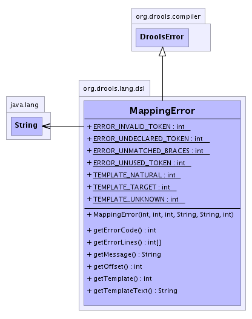

org.drools.lang.dsl
Class MappingError
java.lang.Object
 org.drools.compiler.DroolsError
org.drools.lang.dsl.MappingError
org.drools.compiler.DroolsError
org.drools.lang.dsl.MappingError
public class MappingError
- extends DroolsError
MappingError
A class to represent errors found in a DSL mapping
-
- 
|
Constructor Summary |
MappingError(int errorCode,
int template,
int offset,
java.lang.String token,
java.lang.String templateText,
int line)
|
| Methods inherited from class java.lang.Object |
clone, equals, finalize, getClass, hashCode, notify, notifyAll, toString, wait, wait, wait |
TEMPLATE_UNKNOWN
public static final int TEMPLATE_UNKNOWN
- See Also:
- Constant Field Values
TEMPLATE_NATURAL
public static final int TEMPLATE_NATURAL
- See Also:
- Constant Field Values
TEMPLATE_TARGET
public static final int TEMPLATE_TARGET
- See Also:
- Constant Field Values
ERROR_UNUSED_TOKEN
public static final int ERROR_UNUSED_TOKEN
- See Also:
- Constant Field Values
ERROR_UNDECLARED_TOKEN
public static final int ERROR_UNDECLARED_TOKEN
- See Also:
- Constant Field Values
ERROR_INVALID_TOKEN
public static final int ERROR_INVALID_TOKEN
- See Also:
- Constant Field Values
ERROR_UNMATCHED_BRACES
public static final int ERROR_UNMATCHED_BRACES
- See Also:
- Constant Field Values
MappingError
public MappingError(int errorCode,
int template,
int offset,
java.lang.String token,
java.lang.String templateText,
int line)
getErrorCode
public int getErrorCode()
- Returns this error code
- Returns:
getErrorLines
public int[] getErrorLines()
- Description copied from class:
DroolsError
- Returns the lines of the error in the source file
- Specified by:
getErrorLines in class DroolsError
- Returns:
getOffset
public int getOffset()
- Returns:
- the offset
getTemplate
public int getTemplate()
- Returns:
- the template
getTemplateText
public java.lang.String getTemplateText()
- Returns:
- the original content.
getMessage
public java.lang.String getMessage()
- Description copied from class:
DroolsError
- Classes that extend this must provide a printable message,
which summarises the error.
- Specified by:
getMessage in class DroolsError
- See Also:
DroolsError.getMessage()